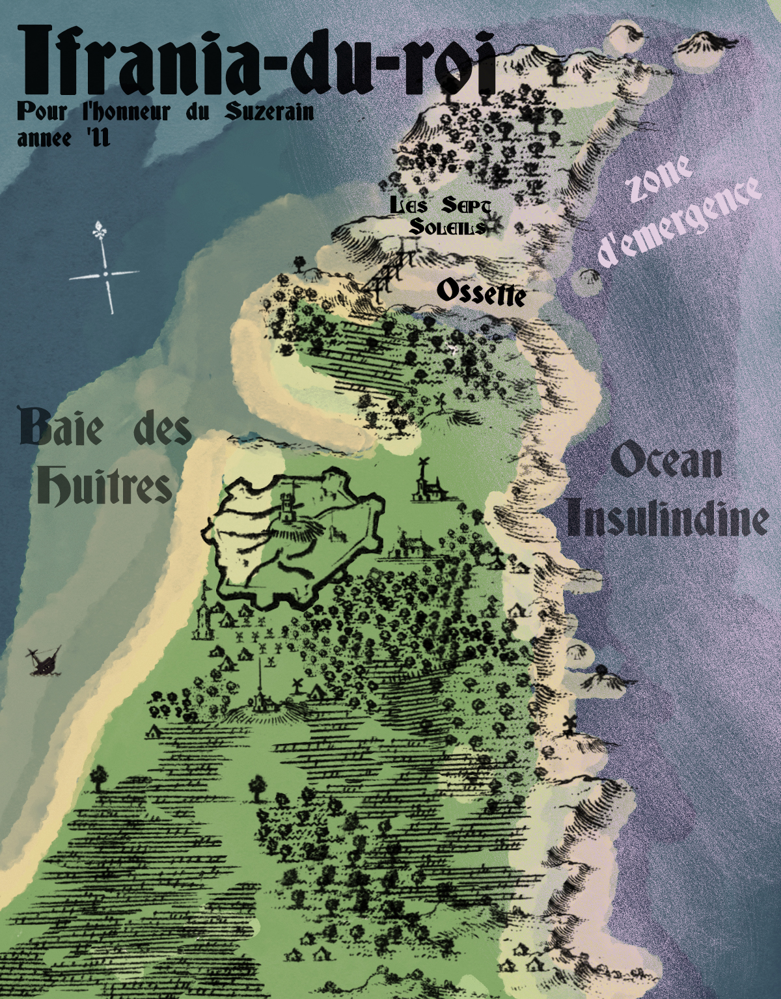

Chapter 1: The Dacha Hostel
DAY 1
APRIL, '51
Riding the Causeway northeast was like reading a seismogram: steady, small waves, until—geological interruption. The Valènce Peninsula, 500 km from Revachol West. Here, where the highway met the ocean, elevation jumped and dropped, coast curved in and out. The interpelagic highway trailed erratically north along the Insulindic coast, winding along cliffs and slopes, swooping over deep river gorges, no longer following the cardinal rhythms of human mapmakers or roadbuilders. It was as if the road itself was trying to slow down its travelers—cargo lorries, INSURCOM military transport vehicles, and the occasional 'bus or MC—the closer they came to the edge of the ocean, the edge of the world.
It was to this lonely coastal outpost that Kim Kitsuragi—not Lieutenant or Detective Kitsuragi, right now, just Kim, a state of self he did not prefer—was traveling—not by motor carriage, but by omnibus, a state of being he definitely disliked. And tasked with—burdened by—stewardship of a dog—a state of being he wished, above all else, not to be in.
And there was, inexplicably, on this lonely, foggy stretch of road 50 km from the edge of the world, a traffic jam.
L'EMERGENCE: At the edge of every isola, the Pale eats away like an ocean. The breakdown from matter to Pale is known as Porch Collapse. Within a radius of +/-50 km from this point, the tide of nothingness ebbs in and out, creating a corona of anomalies, irregularities, and space-time displacement. This twilight zone is known as l'émergence.
Insulinde has only two known zones of émergence that are contiguous with land: In the Semenese Archipelago, and the Valènce Peninsula, the easternmost cordon in the Zone of Control, on a large but underpopulated island connected to Le Caillou by interpelagic bridge. Cargo traveling northeast out of Revachol to Graad departs by airship port on Valènce, the last stop on the Emergent Causeway.
"Do you have any idea what's causing the delay?" Kim asked the 'bus driver.
L'Omnibus Octopus ("OctoBus! We only stop for red lights!") was nearly empty and depressingly in need of a paint job or euthanasia. In front of their grimy windscreen, curving around the next slope of coastal road, Kim could see a line of red taillights.
The camion behind them honked.
The omnibus driver, an implacable middle-aged woman in an ill-fitting scarlet uniform, shrugged.
Great.
Kim's (and the dog's) destination was not the Port of Valènce, but the remote town of Ifrania, some 50 km south of the port.
IFRANIA-DU-ROI: Founded in the Dolorian Century as a military retreat for the Army of the Suzerain posted at the Valènce Base. Cliffs, birds, dangerous tides. After Revacholian independence, abandoned. During the Antecentennial Revolution, the ICM used the retreat as a stronghold after they bombed out the Port of Valènce. Now, a small village sustained on the oyster trade. Most of the population today is Iilmaraan, Samaran, and Ubi.
Ifrania is also home to the oldest—possibly, it's disputed—evidence of pretermodern human settlement on Insulinde, Les Six Soleils. It was once a popular stopping point for tourists wishing to hike the beautiful, but remote, Cliffs of Valènce.
Valènce's third and final claim to fame is its mention the second verse of the '32 soft-rock hit, "Makin' Love in a Houseboat," which peaked at #5 in the Revacholian pop charts. That one is best left to the graveyard of time.
Les Six Soleils was more a legend than an archaeological site. Some said it was a hoax to drum up tourism. If it was, it was a failure. But Kim's destination was the cliffs, not the putative historical site.
ESPRIT DE CORPS: "Leave means leave, Lieutenant. You've been "on leave" for almost a month, and you haven't taken a break. Before I even consider letting you back to your post, you need to take that dog and get away from the city. Far away."
He had his hiking boots, his wool long underwear, his water-repellent poncho, even his camera, plus a precious—and expensive—box of 6 ampoules. In a used bookstore in his neighborhood, he had dug up a moth-eaten Guide Gris to "The Natural Wonders of Le Caillou and Surrounding Archipelagos," printed sometime before the revolution, for Occidental tourists.
The only thing he was missing was a positive attitude.
GRONKY, RCM COUNSELOR-IN-TRAINING: "A positive attitude is the most important part of the healing process. There can be no healing without a growth mindset."
Kim returned to his seat. The dog gazed at him dolefully. He ignored it. By his accounting—which was generally very precise—the 'bus was less than an hour away from his destination. Outside, fog hung low over the pines. The trees on the eastern side of the road were twisted by the sea wind. He looked idly over the trunks for signs of Palestorms, which the guidebook had described in vague terms. He wondered whether those "signs" were real or just superstition.
Slowly, the omnibus inched down the long slope, and then around a curve, revealing a sliver of ocean between the pines. As the road curved uphill again, Kim found himself watching the log truck in front of them. An irrational dread was creeping over him, like the fog permeating the trees outside. He stared at it fixedly, as though, if he focused his energy on the possibility of one of the logs coming loose and smashing into the omnibus, killing the driver and possibly himself, then that misfortune was warded against actually occurring.
When the hill peaked and they began a descent, he relaxed. He heard shouting and a horn beeping ahead, and slid back to his window to look. It was hard to understand, at first, what he was seeing at the bottom of the hill. Approaching in the vanishing point formed by the long line of windows, he saw the back half of a lorry, oriented not in the usual horizontal manner, but pointing up towards the sky. The dog started whining. There were people standing outside, on the shoulder of the Causeway, pointing and talking and staring at the lorry. And then they finally got close enough for Kim to see what was wrong—it was a sinkhole, open in the middle of the highway, eating up most of the road, and the lorry.
"Well I'll be damned," said the omnibus driver, up front.
She turned on her radio, and tuned it to the truckers' talk frequency as they slowly passed by. The sound of the men talking outside mingled with the staticky sounds of men talking about the sinkhole over the airwaves. Kim and the other two passengers stared silently out the east windows. A driver in a high-vis vest had taken on the role of traffic cop, and was waving each side of traffic through in shifts. Finally, it was their turn, and the OmniBus lumbered over the muddy embankment, past the traffic jam around the black bottomless hole, and onward to freedom.
The last slope disappeared and the landscape flattened into a wide salt marsh. Kim followed along on his fold-out map, tracing the route from the marsh to bay. The bay was cradled by the tiny peninsula of Ifrania—his destination. To the east, on the exterior—raging seas. To the west, inside the embrace of the bay—oysters.
The Omnibus Octopus ("OctoBus! We'll get you there yesterday!") coasted across a long bridge, over the salt marsh, and with a great creaking, began to brake.
The dirt road peeling off to the right was called DIKE RD.
DIKE RD SIGN:
IFRANIA-DU-ROI: 5 km.
"ROYALISTS GO HOME"
The omnibus driver, instead of turning right, pulled to a complete stop. "Ifrania-du-roi," she grunted.
Kim stayed in his seat.
"Doesn't the 'bus stop in Ifrania?" he said.
A pause.
"No. Stop's here."
A massive surge of irritation and pain and loneliness and rejection—all things that someone could feel at this. And reasonably so. The bouncer in Kim's mind whose job was to let emotion in or out ruled that these were not to be admitted at this time.
BRAIN BOUNCER: Don't think so, kids.
KIM'S EMOTIONS: We demand retribution! We have rights! We demand entry! We demand blood!
BRAIN BOUNCER: You're too drunk. Go pick a fight somewhere else.
Physically containing the riot inside him was a learned skill, and so was disguising it—he exuded calm as he collected his rucksack from the rack above and clipped the leash on the dog, stood, and disembarked. (Never let them get a rise out of you. Never let them see that it bothers you. Never be what they want you to be.) Calmly, Kim said, "Thanks," and climbed off. The door closed behind him and with a great creak of strained suspension, the OctoBus ("OctoBus! Go 8x faster!") heaved itself away. North, towards the port of Valènce, the last stop in Revachol.
No passengers were permitted in the cargo airships between Valènce and Graad. His two busmates, if they weren't camionneurs heading for their next job, were almost certainly stowaways-to-be.
Once the sound of the engine was gone, replaced with the silence of the wind and the distant rush of waves, Kim looked at the gravel shoulder and thought about kicking it. A 5 kilometer walk. A 5 kilometer walk, with his pack, and his injury, and this dog. He did not kick anything, but he imagined doing so.
KIM'S EMOTIONS: BURN AND DESTROY OCTOBUS!!!!!!!!
BRAIN BOUNCER: Keep it up, and I'll have to call the cops.
KIM'S EMOTIONS: I AM THE LAW!!!
He imagined kicking many things. To an outside observer, he would have simply appeared to be resting before starting to walk.
Finally, he shouldered his pack (painfully) and began walking down the dirt road. The dog, who had waited impatiently on its leash, now started sniffing everything in sight excitedly, overwhelmed with the newness of the bay. Kim quickly lost patience for the tug-of-war and unclipped it, and it ran ahead, chasing a serpentine pattern over the pitted pavement. Skuas skimmed overhead, white reflections on the water.
It was April. Damp and bright. The sky above the marsh was gray. The salt marsh water was gray. The trees were a darker shade of gray. The only color was the burgundy bark on some of the low-growing shrubs, and the sort of chlorinated blue at the tips of the evergreens.
His shoulder injury quickly began to ache, dull and deep. There was no longer any danger that the wound would reopen, but the pack was straining the muscle tissue where it needed to regrow. Kim stopped, resting against the sea wall. He had lost sight of the dog. He entertained a brief fantasy wherein the dog ran away and found a new life with an oysterman. Then he whistled, and the dog rematerialized, collar jingling, soaked up to the neck in muddy marsh water.
"That's going to smell disgusting," Kim commented.
The dog made no reply. It was a dog.
They walked for an hour. Late afternoon turned to dusk. The marsh turned to a bay. Low tide turned. Eventually the narrow strip of road revealed a house ("FREE FIREWOOD"), then two ("FIREWOOD: 0.5R"), then even another unpaved road branching off ("EGGS ⇨"). Kim stuck to the main road. According to his map, the hostel was on the hill in the center of town.
In the gathering dusk, the road passed a wrecked fishing boat, half-sunk and rusted, resting in the bay. Mounds of oyster shells bordered the road. Shards of shell littered the dirt and the gravel like shrapnel. He passed a long, low building, a weather-worn warehouse; then, a small cemetery in a dip in the grass. On the other side of the road, there was a round, whitewashed turret. A guard tower. Its side was covered in graffito, and the wooden entry arm had been broken long ago, but here it was—the shell of the opulent military retreat.
IFRANIA DU ROI
"Bienvenue! GO HOME PIGS!" [faded]
Pop: 501.
[Crude drawing]
In a folding chair next to the crumbling turret, an old Iilmaraan man sat with a fishing rod—the first person Kim had seen in Ifrania. Kim counted a total of four fingers on his hands. There was a bucket next to his chair too, but he wasn't fishing; he was just staring out at the bay.
VRAIMENT VACHOLIERE: An old soldier of the revolution. An officer. Way out here, more revolutionary soldiers from the Black and White Army survived. But not many.
SHIVERS: He's visiting his comrades. Their monument is behind you, in the graveyard. They were buried in the bay.
The town of Ifrania was a mix of the old, stately, whitewashed buildings, half of them abandoned, interspersed with more recent wood residences, sprung up like lichen around the rotting stone. There were fishing boats on blocks in front of houses, getting refitted for the spring. There were paddocks with horses waiting impatiently for dinner. People smoked on their little porches or in their little yards. Two strange dogs trotted up to them, one old and fat and one small and nervous, and Kim shooed them off. But they were curious about the newcomers, and followed him and his own canine up the slope to the hostel.
THE DACHA HOSTEL:
NO VACANCY
GUIDE GRIS, "THE NATURAL WONDERS OF LE CAILLOU AND SURROUNDING ARCHIPELAGOS," FOURTH EDITION: In a rustic seaside setting, the Dacha Hostel is an ornate gem. Housed in the refurbished former retreat of the Royal Army of the Suzerain, it boasts antique mosaic floors, spacious rooms, and a bay view. In the summer season, it is host to beachcombers and hikers. In the winter season, it houses local oystermen and fishermen at discounted rates. Despite its charming architecture, travelers are urged to avoid the Dacha Hostel in the off-season, when the rougher clientele will make for a far less enjoyable visit.
It was nearly dark by the time Kim arrived, and the once grand white walls of the colonial military retreat were a gray silhouette against the blue dusk. This building had been, once, the main event; the grandeur was gone now, all salt-stained walls and soot-streaked windows. On a balcony above the entrance, a smoker in a blazer leaned on a wrought iron railing. At the sound of the three jingling dog collars, he looked down at the newcomers and their welcoming committee.
Kim entered the lobby of the Dacha Hostel—his home for the next week. For some reason, it was decorated with a tropical theme. There were large, leafy potted plants around the mosaic floor, and more than one golden pineapple. The floor mosaic looked to have been some nostalgic Mondiale motif. There was a definite odor of shellfish wafting from the cafeteria area, down a flight of stairs to the right. The air of luxury described by the guidebook was gone; it was clearly fallen on hard times, and what guests were loitering around the lobby and cafeteria entrance were clearly out-of-work fishermen.
"No dogs in the rooms, I'm afraid," the Iilmaraan woman behind the desk told him. She wore her hair in short, thick cornrow braids, and she seemed quite over it. All of it. Her nametag said Claudine Adedayo, but she had not introduced herself. A warm hostess atmosphere did not seem to be her priority.
"Oh," said Kim, looking down at the dog. It was sitting politely next to him, in front of the desk. It looked up at him, as if to say, 'See? I can sit politely.'
Yes. I see. And how long can you actually continue to do so?
"Is there a stable on the grounds?" Kim inquired.
"Yes, there's one out the back," the Dacha manager said, jerking her head. "Shall we put him there for the night?"
"The week," Kim said. The dog was female, but he saw no point in correcting her.
"He won't run off?"
"No," said Kim. "Unfortunately."
"Henri!" the woman shouted, unexpectedly.
The dog sprang to its feet, sensing conflict.
A cloud of hair rose from a nearby armchair, followed by a head and torso.
"What?" the cloud mumbled.
"Our guest needs your assistance."
"You need my assistance," the cloud grumbled, quiet enough for his mother not to hear. He emerged from behind the armchair. Henri was a gangly Black youth, probably 14 or 15, holding a comic book. His jaw and mouth were orbited by silver orthodontic jawgear.
"Take the nice man's dog out back, to the stable, please, Henri," the hostel manager said. Wordlessly, Kim handed the leash to the teenager.
"Then come back and bring his bag to his room," the hostel manager added, to her son's retreating back. She started tapping a complicated sequence of sums on her calculatrice.
"That will not be necessary," Kim said, nudging his bag where it stood between his feet.
"You are here to hike, are you not?" she said, still tapping.
"Yes," said Kim after a weird hesitation.
"Then you should not strain your shoulder any more than you already have."
He frowned slightly at her. Observant. There was no bandage or sling anymore—at this point, it was only an internal injury.
ESPRIT DE CORPS: An eye worthy of a detective.
DATA COLLECTOR: What's her history?
"May I borrow your luggage trolley?" Kim asked patiently, unwilling to yield ground but wishing to acknowledge her attentiveness.
"Fine, then," the manager said, completing her calculation with a particularly vicious clack. Keys jingled and then dropped into Kim's palm. "Room 17. Ground floor. It's yours for the week. If you want to renew, find me. If I am not here, find Henri."
"Thank you. Is there a map of the bay that I can peruse?"
"In the cafe," she said, pointing. "On the wall. If you want a portable trail map for yourself, you'll have to go down to the Hôtel de Ville."
He unpacked in his room, ate in the cafeteria, examined the map, and smoked in his little bedroom with the window cracked. Cold, humid air wrapped around his bare arms. Antique lace curtains fluttered around his ears. The smoke from his cigarette raced out into the night to join the mist and the rain and the salty air.
To the east, the ocean churned. Further east, the Pale. To the west, the bay was quiet. Further west, the Causeway. The long, thin thread connecting him to home.
When Kim slept, he had the street racing nightmare again.
*

DAY 2
VRAIMENT VACHOLIERE: The guidebook won't tell you this part, because it happened long after it was published. In the Antecentennial Revolution, the communards took the Valènce Base from the royalists. Once the commune was established, the ICM fortified the base, preparing for a potential invasion from Graad. The communards set up an auxiliary base in Ifrania, in the abandoned military retreat. Ifrania had storage, a bunker, plenty of housing, and a marina for launching small craft. As a militia base, it was perfectly suited. It was tidy, welcoming, and well-stocked for the 8 short years of the Commune of Revachol.
The strategy was sound, but the fortifications woefully insufficient; the Valènce Base was a landing site when the Coalition Army attacked, and it was captured within two days.
Many soldiers of the Black and White Army fled the base after the attack. In the confusing months that followed, as INSURCOM crawled over its new territory, searching for traitors, many militiamen trickled back to Ifrania, to the old fort. The townsfolk hid them. It became the last communard holdout on the Valènce Peninsula, one of the last in the ZoC. In the end, they came by aerostatic. All the militiamen still in Ifrania were arrested. Many were killed. Their bodies were burned and their ashes were dumped into the Insulindic. All loyal communist citizens who had harbored them were arrested. Ifrania-du-roi was actively occupied by INSURCOM until '15.
On his first day of hiking, Kim overextended himself. He embarked on a challenging cliff loop on the other side of the bay; starting on the edge of town, he walked 5 km back inland, then climbed steeply for 2 km, and then walked on the top of the cliffs for several kilometers—more tiring than it sounded—followed by a steep, challenging descent, and a long, long walk back via beach, on loose sand. It was almost 20 km in all, and by the time he got back to Ifrania, he was exhausted. The dog seemed to have enjoyed it, which Kim told himself he was not allowed to resent. (It's a dog.) It had found no end of foul-smelling things to investigate and then roll in. Immediately upon return to the Dacha Hostel, Kim escorted the dog back to the stable, then found Henri and asked him to feed it.
"Sure, whatever," Henri said, not looking up from his BD. Kim, holding his shoulder with his other hand (it was aching fiercely), sighed minutely. Someone else's responsibility, now. If only he trusted the sullen teen to actually take care of it.
INTERPERSONAL ACUITY: I don't.
RCM MEDICAL TRAINING COURSE: You need a bag of ice. And anti-inflammatory medication.
He decided to ask in the cafeteria, not wishing to entrust more medical information or responsibility to the Dacha manager. A friendly, seemingly stoned cook in an apron gladly gave him a bag of ice. Kim retreated with his meal (fish) to the seating area near the bar, where the chairs were more comfortable. He burrowed into an armchair, bundled the ice pack into a handkerchief, and rested it on his shoulder with a sigh of relief. The hike had left him hungry, but too exhausted to eat. His eyes drifted shut.
Something woke him from dozing—a frisson of his senses, an instinct that someone was coming to wake him up. Someone familiar.
When he fought his way back up to consciousness, reality cut across him more harshly than usual. No, his partner wasn't here.
ESPRIT DE CORPS: Not this time.
ESPRIT DE CORPS: But...
But... there is someone. At the center of the room, and somehow at the center of its attention, a man stands at a table—outrageously dressed, outrageously out of place—slowly scanning around as if searching for someone. He's a long-legged, broad-shouldered bear in an ugly, ill-fitting shirt, unbuttoned with collar open, presumably to display his chest hair, or maybe to encourage a general atmosphere of disco wherever he goes. It's not actually a disco shirt, but the effort is there. The bear has a hangdog look in his eyes, long hair down to his shoulders, and outrageous mutton chops on his face. His pants are, despite the locale (remote Insulindic fishing village) and the year ('51), flare-cut. Though Kim has to respect the spirit of the effort—it's commendable, presenting yourself with no regard for trend, for how others want you to be, or for restrictive hetero-sexual ideas of "propriety"—the overall effect is one of faded glory, and rather sad.
Kim feels like he knows a million things about this man, before even learning his name.
What's immediately obvious is that this man is someone who attracts a lot of attention, and people like that are to be avoided at all costs. Especially while Kim is trying to "relax."
But the attention he's attracting is also Kim's.
DATA COLLECTOR: There's just so much to take in. It's a feast of information. You could spin his entire life story without ever asking him a single question.
VOLTA DO MAR: People like this are a different species from us.
BRAIN BOUNCER: No, they aren't. You put up a story for the world, just like he does. It's just a different story. With fewer chapters available to the public.
VOLTA DO MAR: Yeah, no. This? It isn't a story. This is the truth. People like this live one life, on one wavelength, as one persona. The person who they are when they talk to others—that's who they are in their own head, too. They might as well be aliens from the moon for all we have in common.
The bear is standing with his hand on his chair, at a little high-top table, which he's sharing with another man (a date?). The other man is also dressed incongruously for the setting, but not for the decade—he wears a brown, professorial suit, with a sweater underneath. Kim can't really make out his face from this distance. That's when Kim notices the jacket, hanging off the back of the bear's chair. It's a green blazer, with white, rectangular patches on the shoulders and back.
RCM patches.
Kim lets the ice pack fall off his shoulder and slide in between his leg and the cushion. The stranger has no way of knowing, of course, that Kim is also an officer of the RCM, but this instinct is absolute: show no weakness.
M. Vacation Flic (he isn't on duty or local, the RCM regiments of Revachol's outer regions have a different insignia) is not actually looking at Kim, but he is scanning the bar area as if looking for someone.
He finds his mark—a woman sitting alone, reading. He approaches her table. The woman looks up from her book, visibly skeeved by Vacation Cop, or, as he probably appears to her, Aging Disco Asshole. The RCM patches have violently reoriented Kim's perception of this man, knocking over the dominoes of his initial impressions into a cascade of assumptions: Faded glory cop, heavy drinker, probably a chauvinist, probably hasn't been useful to his precinct in over a decade, probably here to—what? Here, of all places? Why Ifrania? Why the Valènce Peninsula?
ESPRIT DE CORPS: (challenging—success) To dry out.
VOLTA DO MAR: As far away from the city as they can get him.
ESPRIT (MALIN) DE CORPS: Just like you.
"No... thank you," the woman is saying. It sounds like whatever he said was weird—not what she expected, in a good way, but also not what she expected, in a bad way.
This unique and unexpected situation, 500 km from home, presents Lieutenant Kitsuragi with a fight-or-flight dilemma. Flee, and escape the attention of this attention-siren. Escape to the safety of your room, unnoticed, just the way you always are, just the way you prefer to be. Or stay, and—and what? The dilemma reveals an underlying problem, a previously undetected structural flaw. Lieutenant Kitsuragi, of Revachol West, knows exactly who he is. Kim, off-duty at home, at a club, at the motor pool, knows who he is, too. But Kim Kitsuragi, lone traveler, far from home—who is he? He isn't a cop, and he doesn't have a partner, and he isn't a date, and he isn't a torque dork, and he has a dog.
If this never-off-duty, sobering-up disco flic meets him, who will he meet?
VOLTA DO MAR: You have no idea. Get out of here, now.
KINETIC DRESSAGE: We'll make it up on the spot. It's a challenge. It'll be fun.
INTERPERSONAL ACUITY: "Fun"? When has socializing with strangers ever been fun?
BRAIN BOUNCER: Easy, easy.
Kim decides to stay.
Sober Cop gives the woman a little two-finger salute and moves on. When he turns his attention towards Kim, Kim is ready. He's sitting up straight, ankle over knee, dinner plate balanced on his thigh, ice bag concealed behind his ass.
"Hello there, sir," Sober Cop says, positioning himself offensively close to Kim's armchair. Kim looks up over the rim of his glasses, without tilting his head back. The stranger proceeds: "You look like a man in need of some company tonight."
Kim's eyebrows climb.
"I mean, social company," the stranger amends, though not as fast as he should. "My friend over there and I are looking for a third. To play cards."
Kim finally speaks: "Was this the opening you used with that young woman over there?"
Sober Cop thinks about that. "Oh. I can see how that might have sounded slightly suggestive, now that I think about it."
Slightly. "And you're certain you're talking about a game of cards?"
"You want to play?" the man says, face lighting up with gratification.
"I don't think I said that."
Disco Flic frowns at him with his mouth slightly open, stymied. He doesn't seem stupid, but he also doesn't seem to understand how conversations are conducted.
"We could make it worth your while," he finally says, raising his eyebrows suggestively.
Kim's turn to frown.
What?
"You're absolutely certain that you're talking about a game of cards?" No longer an ambiguously flirty rebuff. A genuine question.
"What?"
DATA COLLECTOR: Bail. This man isn't an intriguing mystery. He's brain-damaged.
No more beating around the bush. "Are you attempting to proposition me?" Kim says.
Disco Cop's cheeks turn bright red. "No! I was talking about putting money on the game! Placing bets!"
Kim's eyes narrow. He is not embarrassed, but Bear Cop clearly is, raising questions about his awareness of—or perhaps comfort with—his own sexuality.
Kim nods towards his plate of food. "I'm eating. If you haven't found another player by the time I'm finished, I'll join you."
Bear Cop smiles. "Great." He snaps with both hands and gives Kim finger guns. It's so unexpected, like everything else about this person, that Kim almost smiles.
KINETIC DRESSAGE: Perhaps Vacation Kim is someone who would smile at that?
BRAIN BOUNCER: I don't think so.
ESPRIT DE CORPS: And this isn't really a vacation.
Kim eats his dinner (too salty) and le flic ours completes his circuit of the Dacha bar (no takers), and returns to his friend at the table. After a few minutes, he turns in his chair, looking for Kim. Kim can't see his expression from here, but like a hard-of-hearing lip-reader, he has a certification in body language.
INTERPERSONAL ACUITY: (challenging) Try to understand Bear Cop from a distance.
-1: hyperopia
+1: cop body language dialect certification
+1: homo-sexual underground body language dialect certification
-1: ambiguously closeted man
One arm over the back of the chair, other hand on the knee, head tilted.
SUCCESS: "You coming?"
Kim joins le flic ours and ami at the table, where the introductions are made. The bear's name is Harrier (Harry), his friend's name is Armin, Kim's name is Kim, and the name of the game is Pétillé. They do put money on the game.
The deck of 64 is divided evenly among them, and the game begins. Kim has played a lot of Pétillé in his day, in various back rooms of Precinct 57 and Processing, which Harry the Bear does not know, because he doesn't know Kim's a cop too, and which Armin the Suit doesn't know either, because he hasn't asked. He seems stuck-up, to Kim; harder to read, and less interesting when read, than his companion. He has a pinched mouth with a permanent scowl at the corners. He isn't old, probably in his mid-40s, but there are already lines there that never smooth out. He doesn't make much small talk. Neither does Kim. Harrier le flic does the talking for all three of them.
Kim's initial hand is strong, making him start out confidently, but his reserve deck reveals itself to be weak, and Harry wins the first game, which delights Harry and seems to annoy Armin. Kim magnanimously refrains from feeling irritated at this loss, because Harry seems to need the money (20 réal), and also because he (Kim) is better than Armin. Armin just doesn't know it yet.
In the course of the second game, Kim makes a stupid miscalculation with his suzerain, and learns that Armin is from Graad. Armin ends up winning the second game, which does irritate Kim, especially since it was his own fault for losing his best hand. Harrier le flic leaves to "Get a drink," and Kim silently predicts what kind of drink it will be. The man has the ragged, high-octane energy of a recently dry drunk, so it'll be something with a gut-corroding sugar content. While he's gone, Armin makes no attempt at friendliness, instead shuffling the cards silently, over and over.
DEXTERITY: He's stacking the deck. Watch out. Make sure he doesn't slip any cards up his sleeve.
INTERPERSONAL ACUITY: He doesn't strike me as that kind of guy.
SPEED DEMON N° 1111: He'd better not be. We need to win this game, and the one after it. Those last two rounds were just a warm-up. This guy is not leaving this table with any of your money.
Harry returns with his soda, spinning his chair around and straddling it backwards, chin resting on the top rail. PEACHPIT COLA™, Mondial Orange-Mint Marmalade. Kim's eyebrows knit in distress at this mélange of flavors. Harry cracks it open, but with notably less verve than before, and then doesn't drink.
Armin continues shuffling.
Kim studies him, with his big arms around the back of the chair, embracing his RCM-emblazoned blazer. His look is distant and morose. Sometime during the trip to the cafe counter, his mood dropped. Kim guesses it has nothing to do with the card game or the soda.
"Peachpit Cola?" Kim says, making conversation as Armin starts dealing.
"I can't drink liquor anymore because of my liver," Disco Cop says, with disarming frankness. "If I have another drink, I could die."
"Oh," says Kim.
Not much else to say to that.
VICE: Sugar takes the edge off the craving.
"You're an officer of the RCM?" Kim says, after a pause.
Harry returns from whatever thought was occupying him— "Me?"
"Yes. You." Kim nods at the blazer.
"Oh," says Harry. "Yeah, I'm a officer. A detective."
Me too, Kim does not say. A thought, or really, an impression has been forming itself in the back of his mind. It now rolls fully into the light.

THOUGHT GAINED: MYSTERIOUS STRANGER
There's something familiar about this man. Have you met before? It's not impossible. You have a good memory for things like this. And it has an impression of this man from somewhere in the past.
Where have you met before?
But he doesn't recognize you. You could say something about it, and then maybe Harrier's memory would be jogged, and he'd solve the mystery for you. But you won't do that. You'll try to remember it yourself, first, won't you?
1. I can figure this out. I have an excellent memory. (Proceed)
➤ 2. This is going to bother me, but as long as he doesn't remember me, it isn't actually important. [Discard thought]
Kim could admit their possible acquaintance—the RCM—to this man, but that would mean placing himself in the position of the person with the poorer memory. It would also mean surrendering information, and potentially surrendering ground—what if it unlocks more information about himself in the other man's mind, information Kim is not privy to?
ESPRIT (MALIN) DE CORPS: Judgements made at any moment in your long career as a junior officer. Judgements that will never be forgotten.
Kim refuses to begin their acquaintance on anything other than his own terms.
Harrier picks at the shoulder seam and says nothing further.
"How long have you been a detective?" Kim asks.
He shrugs. "I don't really know."
Kim frowns at that. "How can you not know?"
Harrier le Disco Flic shrugs again.
"...It's a long story."
"Aces up," Armin says, in his nasally voice.
Kim takes up his hand reluctantly. How much drinking has this guy been doing?
It's a good starting hand for Pétillé. But to his vexation, Armin the Suit's seems to be better. He blocks Kim at every turn. Harrier is eliminated faster than usual, to which he sighs—"I'm out, fellas"—and he sits there watching as Kim and Armin go head to head, nursing his Peachpit Cola.
In the haze of the competition, Kim has the impression that this man dreads being alone, and would sit and watch Kim and Armin painting a wall white if it would pass the time. But 90% of his faculties of concentration are focused on the game. 5% develops that thought about Mr. Disco Cop, and 5% maintains an attitude of disinterest. A bored expression, relaxed body language, a casually tapping foot. He feels Harry watching his hands.
"Out," Kim finally admits, with very non-gritted teeth. He drops his last card into the middle of the table.
Armin huffs a satisfied sigh, smiling smugly. Kim's toes curl up inside his boots. Immense dislike floods him. Intense desire for revenge overwhelms him. Carefully broadcasting no resentment whatsoever, he hands over his 20 réal. Armin thanks him, pocketing it. Harry watches the exchange.
ESPRIT DE CORPS: He can tell how pissed off you are.
"It's been an interesting night, gentlemen, but I have to get to sleep," Kim says, standing up. His back and shoulder ache from the long day. "Enjoy your evening. And your trip."
Harry gives a little two-finger salute. "Pleasure." Armin acknowledges him with a nod. Kim goes outside to smoke, and when he comes back in, he sees Harry the Disco Cop at the counter, paying for his room with the 20 réal he won at cards. Kim goes to bed resolving never to socialize in the hostel bar ever again.
*
DAY 3
GUIDE GRIS "THE NATURAL WONDERS OF LE CAILLOU AND SURROUNDING ARCHIPELAGOS": FOURTH EDITION
CHAPTER 8: VALENCE PENINSULA
> MUST-SEE: OSSETTE TRAIL
> Explorers with plenty of time may consider venturing to Ossette. This remote outpost offers grand adventures on the wild and scenic coast, as well as a MISCO World Heritage Site, Les Six Soleils. Les Six Soleils is located on a tidal island at the tip of the cape, and can be accessed by road, or, for adventurous hikers, by the beach cliff route likely taken by its creators, over 1,000 years ago. The tidal island is cut off at high tide by the Ossette Gorge. The experiential highlight of this area is the 12 km triangular Ossette Trail, which starts at the drive-in campground 2 km north of Ifrania-du-roi (see p. 40).
The first leg of the Ossette Trail angles east-northeast along the bay, and for most of its 1.5 km length, it is rustic boardwalk. (Hikers beware: These boardwalk planks can be slippery when wet, especially in the rainiest region of Insulinde! Trekking poles and hiking shoes are strongly recommended.)
At 1.5 km, before the Ossette Gorge, the trail splits. The Sentier des Soleils goes north via bridge* to the île des Soleils, while the Ossette Loop continues down the cliffs, to the Insulindic beaches. The stone stairs are extremely steep and slippery, and accessible only at low tide. *NOTE: BROKEN
The staircase will emerge at the eastern mouth of the Ossette River Gorge. Wildlife enthusiasts can examine fascinating tide pools here! But beware! The tide comes in quickly!
Follow the gorge west, towards the Insulindic. The stone staircase up to the tidal island is similarly steep. (For the Sentier des Soleils, see p. 45.) To continue on the Ossette Trail, follow the beach west and then turn south. From the cobblestone strand, it is 7 km to Cormorant Point. Finish at the Ossette Campground (seasonal: June - October). Boardwalks cover much of the trail heading northwest, back to the trailhead. *CAMPGROUND CLOSED
On the second day of so-called "vacation," Kim rose early and hitchhiked to his destination, a trailhead just north of the village—not far, but not worth the extra 5 km to-and-from. He had learned his lesson the day before. The MC was old and wheezy, carrying three men to their job packing oysters at a plant an hour further up the Emergent Causeway. The Republic Oysters packing and shipping facility was close to the port, as the chattiest of the three workers told him through the open back window (Kim and the dog rode in the flatbed)—that way the oysters were at their freshest before shipment through the Pale. When they got to the other side, they could still legally be called freshly-packed—packed that very day, in a way, since time passed in the Pale had no meaning. The downside was that sometimes, Palestorms rolled inland, shutting the factory down for days at a time.
"Or, they say it's days. If we're stuck in there when a storm starts—we got no idea!"
The worker laughed at this. His companions seemed unamused. Kim smiled vaguely, nodding. By his reckoning, they had passed into l'émergence a few minutes before.
It was another gray, rainy day. Only a drizzle, as Kim set out on the boardwalk, but it soon started raining harder. Thunder rumbled in the distance, over the sea, and Kim wondered about those Palestorms. There had been nothing on the radio about it this morning, but entroponetic instruments were still fairly unreliable, and it was said that the entroponologists were wrong more than 50% of the time.
Well, there was nothing for it. If a Palestorm did roll in, he'd be trapped in the same moment for a few days, or sent stumbling back a few hours in time, or perhaps spatially rearranged—head replaced with arm, arm replaced with tree branch. Nothing he could do about that, really.
"I accept this," Kim said to the swamp trees.
In reply, the rain water drizzled off the evergreen branches and fizzed on the water below. The dog's collar jingled, somewhere in the shrubs nearby. She barked, and a few birds went fluttering off.
It was peaceful in the marsh, in an oppressive, silent sort of way. Kim thought about the card game the night before, the two strangers, one dull and one interesting, in a brightly colored toxoid-flèche frog kind of way. And familiar—why, why was he familiar?
The brackish marsh populated with gray trees, some dead, some still in hibernation, in early April. Even the needles of the evergreens looked black, slick with water and unlit by sunlight. The boardwalk was treacherously slippery and 50% rotted, obviously unmaintained since his Guide Gris was published—since the Revolution, when the Revacholian tourism industry had been extinguished. Kim reflected on his being here, wondering if this was the vacation of a class traitor. A hiking trip was rather bourgeois. But it was also cost-efficient, since the 'bus tickets were footed by the RCM (compensatory funding for administrative leave), and the hostel was cheap. And it was good for the dog.
Soon, the ground began to slope upward. They left swamp for a few meters of solid ground, and then the trail rose steeply into wooden steps, similarly unmaintained. Kim picked his way through the scrub, forgoing the rotting stairs. He started to hear the sound of waves and seagull cries echoing through the gorge, strangely dampened, like they were coming from inside a vast sewer.
Finally, they reached the top of the cliff. The gorge opened before them, a dizzying 75-foot drop, steep and treacherous. Water swirled below, washing in and out of the gorge from both sides—west, into the bay, and east, into the open Insulindic Ocean. Kim looked towards it, as he had yet to see it in all its glory, but from here, it still remained a big gray blur.
"Wow," he murmured.
He thought about taking a photo, but he was hesitant to spend the ampoule.
His guidebook told him there was a bridge, and Claudine, the hostel manager, told him it was broken. From here, he couldn't tell. The tide was still going out, meaning he couldn't go down into the gorge yet, so he tramped along the cliffside to investigate the bridge. A whistle brought the dog leaping over to him.
"Don't go too far," Kim told it. "And leave the birds alone."
The dog's pink tongue lolled from its grinning mouth. It was having a grand old time.
The bridge was quite distressingly broken. The wood planks were black with rot, and the metal girders were pulling apart from either end, like ripping fibers. A seagull's scream echoed from across the gorge, sounding almost human.
Kim deposited his little pack, and then walked out on one of the beams. Boot in front of boot. He stayed on the metal, stepping over slick wood. The drop below, with just one layer of rusted steel holding him up, made his stomach reel. He could hardly make out the bottom of the gorge. Below him, white gulls and gray skuas wheeled; below them, the water churned over sharp black rocks. The thrill woke him up. His lungs quickened. The wind sang in his ears.
After the excitement wore off, he sat on the broken bridge and read a book he had picked up from the Dacha Hostel's weird little left-behind library (a book much too embarrassing to own for himself), while the tide went out. It took about an hour. 10:50. Too early to eat lunch. When the water was low enough to enter the gorge, he and the dog descended the slick stone staircase (carefully), carved into the steep cliff. He took off his socks and boots and waded in the low water, walking west out of the gorge on the bay side. He watched the oystermen at work for a little while, then turned around and made his way back west.
Towards the Insulindic. At last.
The high, narrow enclosure of the gorge reminded him of the alleys of Revachol, and he felt a pang of homesickness. It was so quiet here—only the wind and the birds, no traffic, no horns, no voices, no radios, no one. Just Kim and the dog.
ESPRIT DE CORPS: Where is that dog?
Kim looked around, but saw no dog-like movement among the low rocks. He put his fingers in his mouth and whistled. Jingle. The dog was up ahead, behind a rock.
"Hey," he said, not knowing why he'd gotten worried all the sudden. The dog looked up at him. Then it took off, towards the open ocean.
Kim watched it go. There was a clump of birds circling a rock, landing and taking off, and the dog tore towards them, barking madly. The birds flew off the rock, mostly—one remained, a gray smudge on the black lump of stone.
The dog kept on barking, barking, barking. It was about 20 m away now, and Kim could see that its tail was wagging, the way it did when it found something, the way it had been trained. As the smudge of rock resolved into a more definite shape, Kim saw that it didn't really look like the rest of the rocks in the gorge, sharp and black. This one was more round and flat, almost like mud. The bird, finally, reluctantly took off. But the dog went on barking at the rock.
Kim, without really knowing why, started jogging, hugging his boots to his chest like a rugby ball. The dog barked, tail wagging, bounding towards the rock and then backing off again.
The wet sand gave way beneath Kim's cold, bare feet as he slowed to a walk. The rock was mud-brown, flecked with sand, with an elbow sticking out towards Kim. It was a person. Dead, almost definitely.
"Hello? Sir?" Kim spoke sharply, voice echoing off the rocks. "Sir, are you all right?"
The dog barked and barked.
Kim reached the figure, and circled it, dropping to a crouch. The face was pale, not yet unnaturally so, but there was a deep, dark gash in the side of the face. And Kim knew the face. It was Armin, from the hostel, wearing the same clothes as the night before. He was dead.
And the tide was coming back in.
Suresne Glossary
Click the word to return to it in the main text.
- Hôtel de ville: Town hall
- Flic: Cop
- Ours: Bear
- Pétiller: To fizz [as a reference to Fizzbin]
- Malin: Evil (esprit malin = evil spirit.)
- Gris: Gray (guide gris = gray guide)
- Flèche: arrow